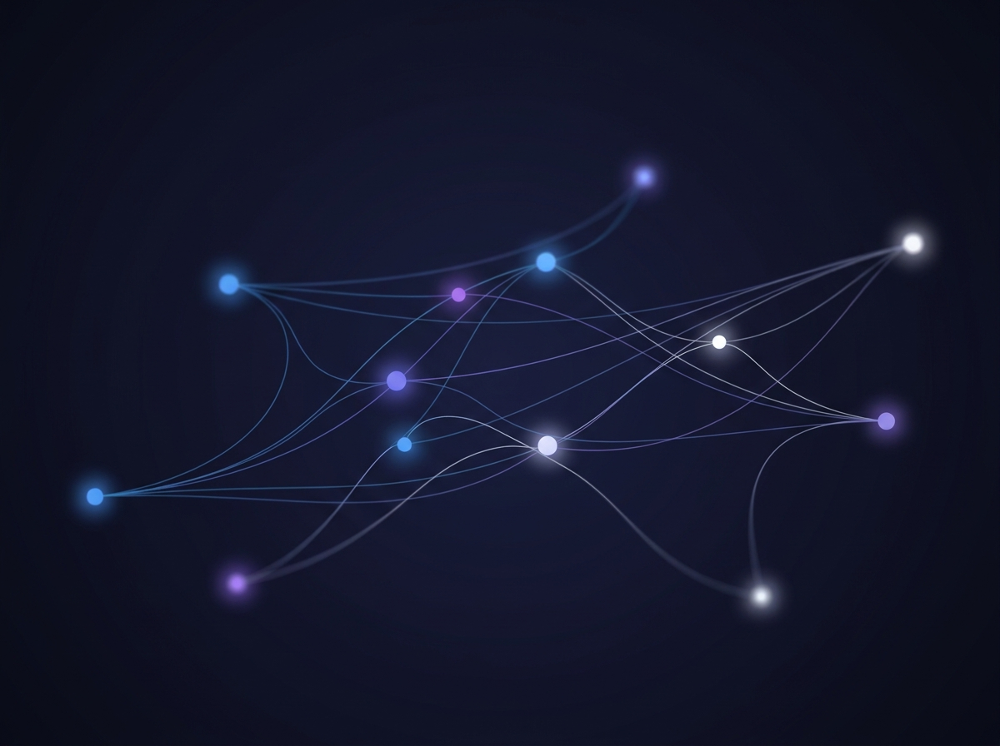

Built on the frontiers of possible
Aura leverages a constellation of industry-leading models to provide seamless, human-grade interaction at the speed of thought.
Intelligence Overview
Four coordinated layers turn ambient audio, vision, memory, and integrations into one wearable AI system.
Perception
Aware of what you hear and see.
Powered by Deepgram Nova-2 for real-time speech-to-text, and GPT-4o Vision for spatial context. Aura processes your conversations and visual world simultaneously.
Latency
Sub-second thoughts.
Built on Groq LPU hardware, running language models at the limit of physics. Sub-500ms end-to-end response time.
Recall
Never forgets.
Uses Pinecone's serverless vector database to index conversation semantic embeddings, ensuring permanent contextual recall.

Agency
Connected to your world.
FastAPI agentic endpoints powered by LangGraph. Aura securely connects to your Apple Health stats, manages your calendar, checks your Gmail, or searches the web.
A seamless orchestration of industry giants
Each component is selected for its best-in-class performance, integrated via a custom API mesh that minimizes overhead and maximizes creative potential.
Average voice-to-text response loop powered by Groq LPUs, matching the speed of natural human conversation.
Perception stack routing: Deepgram Voice input → Groq/GPT-4o LPU reasoning → Pinecone Vector RAG → Speech synthesis.
Built from standard off-the-shelf components. Zero markup, zero artificial gates, total developer freedom.
* Latency measurements based on wired client connection routing through Groq server API. Results may vary depending on local cellular connectivity and backend server load.